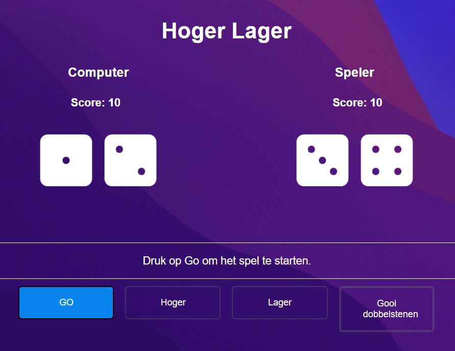
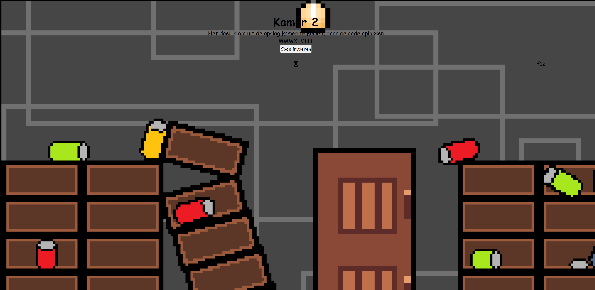
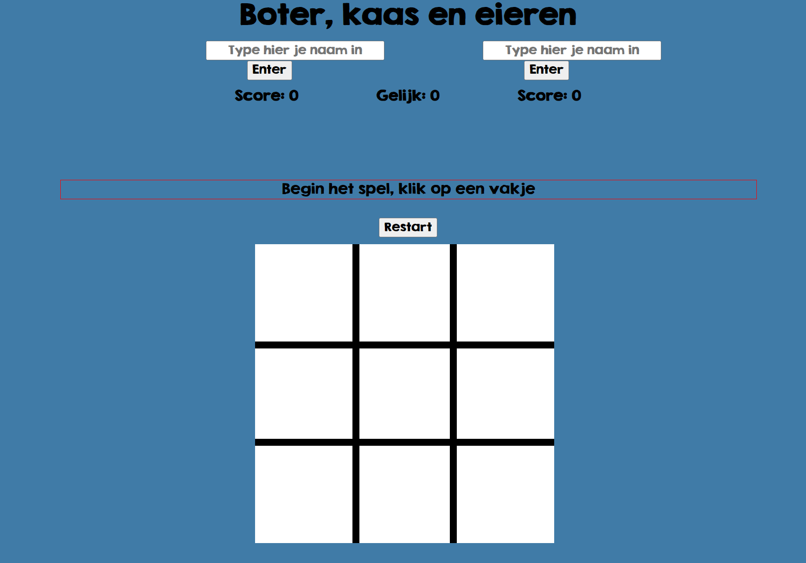
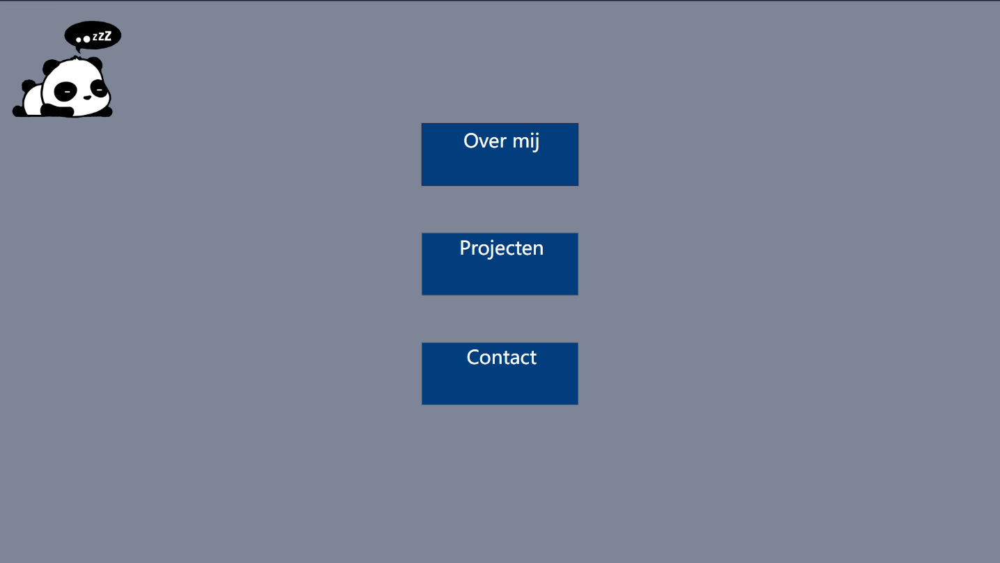
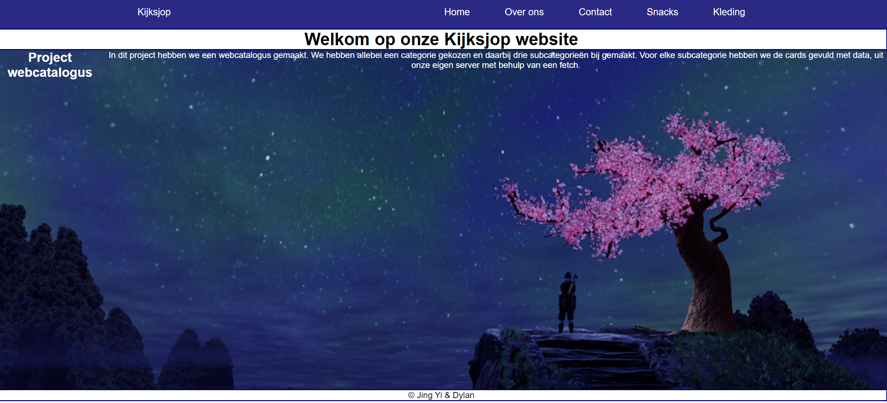

Dit project heet Hoger Lager en het doel van dit spel is om te raden of je hoger of lager gaat gooien dan de computer. Jij en de computer beginnen met 10 punten en als je het goed raadt, dan krijg je een punt erbij en wordt er bij de computer een punt afgetrokken. Het gebeurt ook andersom, dus als je het fout raadt dan wordt er een punt van jou afgetrokken en krijgt de computer er een punt bij. Je hebt pas gewonnen als de computer 0 punten heeft. Dit project heb ik samen met iemand anders gemaakt en hebben we de basis van HTML, CSS en JavaScript geleerd.
In themaweek 1 moesten we in een groepje een escaperoom maken. Ons senario was een boot dat aan het zinken was en dat je moet repareren. Iedereen had zijn eigen kamer die hij mocht maken en mijn idee was dat je een Romeinse nummer moest invullen. En mijn idee was best goed gelukt. De code had ik wel van een website, maar toen had ik wel een idee van hoe het werkte. In dit themaweek heb ik geleerd hoe ik goed moet samenwerken met anderen en welke vragen ik moet stellen aan anderen. Ik heb niet echt veel geleerd qua techniek, maar wel inzicht gekregen van wat je allemaal kan doen.


Dit project heet Build a Game, ik zat in een groepje met twee anderen en iedereen moest een toegewezen game maken. Een teamgenoot moest Whack a Mole maken, een ander teamgenoot Zeeslag en ik moest Boter, Kaas en Eieren maken. Dit project vond ik wel een uitdaging en voor mij net te lastig. Wat ik heb geleerd tijdens Themaweek 1 qua samenwerken, heb ik bij dit project toegepast en samenwerken ging wel wat beter. Qua technieken hebben we HTML, CSS en JS gebruikt.
In themaweek 2 moesten we iets kiezen om te maken en ik had eerst geen idee wat ik wilde maken, maar toen hoorde ik dat je aan iets anders kan verder werken. Toen kwam ik op het idee om verder te gaan met portfolio. Ik had mijn functioneel ontwerp al af, dus moest ik het alleen nog maar coderen. Ik had al veel moeite met de lay-out namaken en de teksten te plaatsen waar ik het wilde hebben. Mijn portfolio lijkt dan ook anders dan het functioneel ontwerp, want hoe de lay-out was vond ik toch niet zo mooi.


Dit project heb ik samen met iemand gemaakt en we moesten samen een webcatalogus maken. De website moest een home pagina hebben, een over ons pagina, een contact pagina en twee categorie pagina's hebben. In de categorie pagina's moesten drie cards staan die linken naar een subcategorie. En in de subcategorieën zitten er cards in met de producten. Om de cards met data weer te geven, moest dat met een fetch naar onze eigen node server. Eerst wisten we niet hoe we dat moesten doen, maar toen ik terug keek naar vorige lessen van NodeJS, ben ik er uiteindelijk wel achter gekomen.